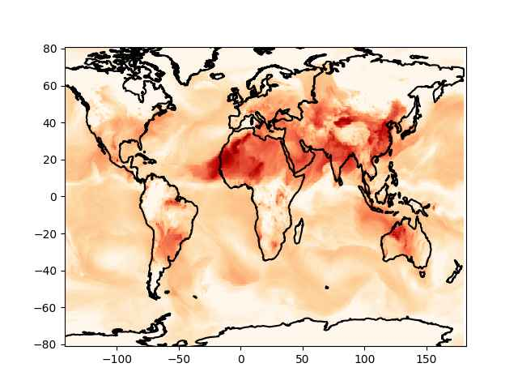

Hava Kirliliği, SILAM, AQI
SILAM [2] adlı bir kurum hava kirlilik durumu verilerini paylaşıyor. Bu veriler kullanılarak hava kirliliğini belirten bir özet ölçüt AQI hesaplanabilir.
Ventusky
Ventusky uygulaması faydalı, zaten onlar da verisini SILAM'dan alıyor.
https://www.ventusky.com/?p=40;32;6&l=aqi
OpenWeatherMap
OpenWeatherMap sitesinden de yeryüzündeki herhangi bir yer için anlık hava temizlik durumu alınabilir. Verilen bilgiler yer seviyesi ozon (O3), partikül kirliliği (PM2.5, PM10), carbon monoxide (CO), sülfür diyoksit (s02), nitrogen diyoksit (no2). OWM sitesine bedava kayıt olup bir anahtar almak yeterli, biz anahtarı
{
"weatherapi": "[anahtar]",
...
}
bir .conf dosyasına yazdık, JSON formatında, anahtarla alttaki kod üzerinden
bilgiyi alıyoruz,
import json, requests, os
def pollution(lat,lon):
url = 'http://api.openweathermap.org/data/2.5/air_pollution?'
params = json.loads(open(os.environ['HOME'] + "/.nomterr.conf").read())
payload = { 'lat': str(lat), 'lon': str(lon), 'appid': params['weatherapi'] }
r = requests.get(url, params=payload)
res = [json.loads(x.decode()) for x in r.iter_lines()]
aqi = res[0]['list'][0]['main']
comp = res[0]['list'][0]['components']
return aqi, comp
lat,lon = 28.667497225228697, 77.04931436061617
pollution(lat,lon)
Out[1]:
({'aqi': 5},
{'co': 1642.23,
'no': 4.81,
'no2': 52.78,
'o3': 151.63,
'so2': 154.5,
'pm2_5': 277.4,
'pm10': 318.04,
'nh3': 5.7})
Rapor Hindistan'ın başkenti Yeni Delhi için, bu sıralarda hava kirlilik problemi var, ve AQI maksimum olan 5 seviyesinde çıktı.
SILAM
SILAM ile tüm dünya için geçmiş tarihteki kirlilik verisi bulunabilir,
[1] bağlantısında dosyalar görülüyor, alttaki kodla 20231104 tarihi
için olan nc4 dosyasını alıyoruz,
import requests, os
def download_silam(f, outdir):
base_url = "https://silam.fmi.fi/thredds/fileServer/dailysilam_glob06_v5_8/files/"
target_file = outdir + "/" + f
url = base_url + "/" + f
if not os.path.isfile(target_file):
r = requests.get(url, allow_redirects=True)
open(target_file, 'wb').write(r.content)
f = 'SILAM-AQstat-glob06_v5_8_2023110400.nc4'
outdir = "/opt/Downloads/skdata/silam"
download_silam(f, outdir)
Dosyada paylaşılan bilgilere bakalım,
import netCDF4
sf = netCDF4.Dataset(outdir + "/" + f)
for x in sf.variables.keys(): print (x)
air_dens
daymax_cnc_PM10
daymax_cnc_PM2_5
daymax_vmr_CO
daymax_vmr_NO
daymax_vmr_NO2
daymax_vmr_O3
daymax_vmr_SO2
daymean_cnc_PM10
daymean_cnc_PM2_5
daymean_vmr_CO
daymean_vmr_NO
daymean_vmr_NO2
daymean_vmr_O3
daymean_vmr_SO2
hybrid
lat
lon
time
Bunlardan mesala ortalama PM 2.5 verisi daymean_cnc_PM2_5
sf.variables['daymean_cnc_PM2_5'].shape
Out[1]: (7, 1, 297, 600)
Bu bir tensor, yani çok boyutlu matris, görülen boyutlarda, bu boyutların ilki gün içindeki zaman kesiti en son ikisi sırasıyla enlem ve boylam. Maksimum enlem, boylamın -180,180 ve -90,90 arasında olduğunu biliyoruz, bunları eldeki veri noktasına bölerek bir ızgara (grid) yaratabiliriz, ve verileri bu ızgarada basabiliriz.
import simplegeomap as sm
x,y = np.meshgrid(np.linspace(-180,180,600),np.linspace(-90,90,297))
z = sf.variables['daymax_cnc_PM2_5'][4,0,:,:]
pz = z * 1e8
z = np.log(z)
sm.plot_continents(0, 20, zoom=18, incolor='black', outcolor='white', fill=False)
plt.pcolormesh(x,y,z,cmap='OrRd')
plt.savefig('hava1.jpg',pil_kwargs={'quality':40})

Dikkat log ile bir işlem yapmak gerekti çünkü veri lineer olmayan bir sürecin sonucu, çok ekstrem değerler var, çoğu yerde çok düşük değerler var [3]. Grafikleme amaçlı olarak bu önişlemi iyi olur.
OWM bir özet AQI hesaplar, SILAM için eldeki bileşenler kullanılarak [4] bir AQI hesabı yapılabilir.
[1] Silam Catalog
[2] Silam
[3] FMIDev
Yukarı